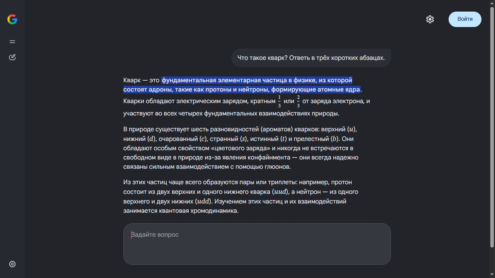

Gemini для Windows*
«Режим ИИ» Google в отдельном чистом окне. Открытый код, для Windows 10 и 11.
Один файл Gemini.exe · Windows 10/11 · работает через Microsoft Edge, он уже есть в Windows · лицензия MIT

Зачем эта программа
Своё окно
Без вкладок и адресной строки. «Режим ИИ» открывается как обычная программа Windows, с ярлыком на рабочем столе и своим значком на панели задач.
Ничего лишнего
Нет вкладок «Картинки / Видео / Новости», колонки статей справа и лишних кнопок. Только ответ, по центру.
Голосовой ввод с командами
Диктовка по Ctrl+Пробел на 50+ языках. Скажите в конце «отправить», и вопрос уйдёт.
Один файл
Скачивается один Gemini.exe, без установщика и архивов. Настройки и вход в аккаунт хранятся в папке программы; ваш обычный браузер не затрагивается.
Установка
- Скачайте
Gemini.exe: один файл, ничего распаковывать не нужно. - Запустите его. Ярлык Gemini появится на рабочем столе и в меню «Пуск».
- Задайте вопрос. Если нужна история чатов, войдите в аккаунт Google.
Если Windows пишет «Система Windows защитила ваш компьютер», нажмите «Подробнее» → «Выполнить в любом случае». exe не подписан платным сертификатом, см. «Прозрачность» ниже.
Горячие клавиши
Ctrl+Пробел: включить или выключить диктовку. Скажите в конце «отправить», чтобы отправить, или «очистить», чтобы стереть поле.Ctrl+,: настройки (язык интерфейса и язык диктовки).Escзакрывает их.
Прозрачность
- Весь код открыт: запускающий файл (
Gemini.cs, около 120 строк) и небольшое расширение Edge. Gemini.exeсобирает GitHub Actions из открытого кода, а не автор на своём компьютере. Логи сборок открыты.- В каждом релизе есть контрольные суммы SHA-256 и аттестация происхождения:
gh attestation verify Gemini.exe -R ishimuraxxx-ai/gemini-1.0.1 - Никакой телеметрии. Программа обращается только к Google.
Частые вопросы
Что именно открывает программа?
«Режим ИИ» Google (google.com/search?udm=50), ИИ-чат Google Поиска на базе Gemini. Программа показывает его в своём окне и прячет всё, кроме чата.
Нужен ли аккаунт Google?
Нет. «Режим ИИ» отвечает и без входа. Войдите в аккаунт, чтобы сохранялась история чатов.
Это безопасно?
Весь код открыт, exe собирается публично на GitHub Actions с контрольными суммами и аттестацией происхождения. Программа не собирает данные и хранит вход в аккаунт только в своей папке.
«Режим ИИ» пишет, что недоступен
«Режим ИИ» есть не во всех странах. Нужен VPN с сервером в стране, где он доступен.
Работает ли на macOS или Linux?
Нет, только Windows 10/11 с Microsoft Edge.